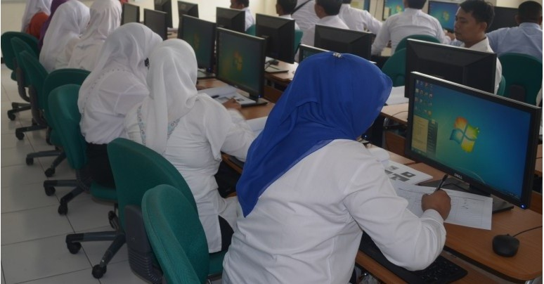

Selamat Datang di Website
Teknik Informatika Polindra Selamat Datang di Website
Teknik Informatika Polindra"Program Studi Terdepan di bidang Teknik Informatika Tingkat Nasional dan Berdaya Saing Global" |
"Jurusan Teknik Informatika di Politeknik Negeri Indramayu terdiri
dari 2 (dua) program studi yaitu: (1) D3 Teknik Informatika (2) D4 Rekayasa Perangkat Lunak"
Visi dan MisiVISI |
|---|

Sertifikasi Kompetensi Berbasis Standar Kompetensi
Kerja Nasional Indonesia (SKKNI) Bidang Informatika
Bagi Angkatan Kerja Muda di Kabupaten Indramayu
Kerja Nasional Indonesia (SKKNI) Bidang Informatika
Bagi Angkatan Kerja Muda di Kabupaten Indramayu

Jadwal Perkuliahan Semester Ganjil Tahun Akademik 2019/2020

Rekapitulasi Absensi Mahasiswa Semester Ganjil 2019/2020
| Testimoni Alumni |
|---|
| Heru Hermawan Jurusan Teknik Informatika POLINDRA, setelah saya lulus saya langsung sekarang bekerja sebagai teknisi jaringan di BANK Danamon |